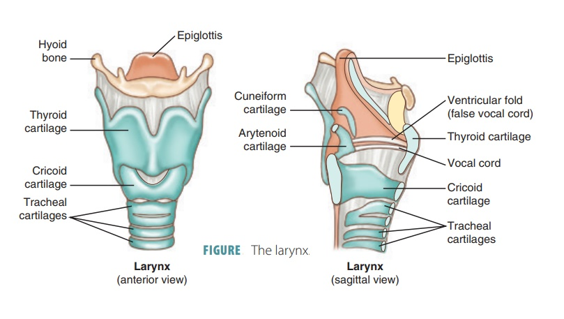
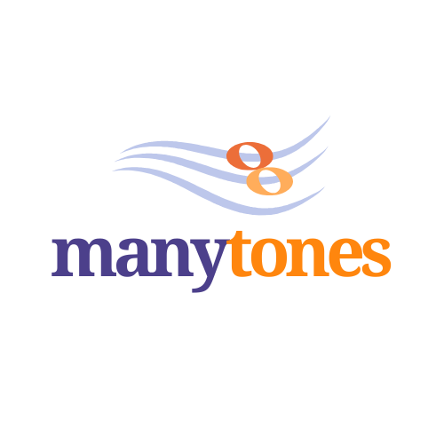
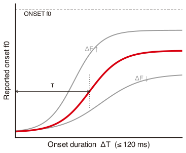
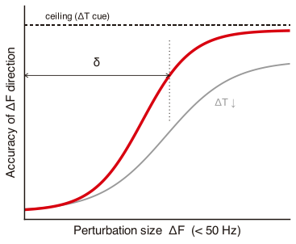

The perception of
f0 perturbations
Preliminary findings & challenges
Chenzi XuDPhil (Oxon)
Nanyang Technological University, Singapore
June 2026
PhonLabLunch, Phonetics Laboratory, Oxford
Roadmap
1
Introduction
a working definition, the typological footprint,
tonogenesis theory, and the historical and acoustic evidence
tonogenesis theory, and the historical and acoustic evidence
2
Motivation
why we need a perception study
3
Method
the pitch-matching task, stimuli, and procedure
4
Pilot findings
what the first listeners reveal
5
Challenges
what the pilot warns us about
Roadmap · 1 of 5
Introduction
A working definition, the typological footprint, tonogenesis, and the historical and acoustic evidence.
One syllable, six meanings
Northern Vietnamese: tap a tone to hear its pitch
Native recordings (Northern Vietnamese) · line length ≈ duration, gap = glottal break · demo after phospeak.com/vietnamese-tones
“
What is a tone language?
Across half a century, definitions have converged on a single criterion: pitch must be contrastive in the lexicon, stored with the morpheme, not supplied by sentence intonation. Three influential formulations:
“A tone language may be defined as a language having lexically significant, contrastive, but relative pitch on each syllable.”
Kenneth L. Pike, Tone Languages (1948: 3)
“A language is a ‘tone language’ if the pitch of the word can change the meaning of the word. Not just its nuances, but its core meaning.”
Moira Yip, Tone (2002: 1)
“A language with tone is one in which an indication of pitch enters into the lexical realisation of at least some morphemes.”
Larry M. Hyman, ‘Word-prosodic typology’ (2006: 229)
Where in the world?
Tone clusters in Sub-Saharan Africa, East & Southeast Asia, and pockets of the Americas and New Guinea, not a quirk of one family, but something that arises again and again.
Note: this plots WALS’s 527-language sample, chosen for broad genealogical balance rather than proportional coverage, so tone languages (many of them languages of Africa and SE Asia) are likely underrepresented here relative to their true share.
Data: WALS feature 13A (Maddieson) · CC-BY · wals.info/chapter/13
complex tone
simple tone
no tones
Does climate shape tone?
The map, from another angle
Everett, Blasi & Roberts (2015) note that cold, dry air perturbs phonation, raising jitter and shimmer and making fine control of pitch harder. They find that languages with complex tone are markedly rarer in arid and cold ecologies than in warm, humid ones, a pattern holding within continents, within families, and across isolates.
3,700+ languages
2 databases
humidity ↔ tone
Everett, Blasi & Roberts (2015). ‘Climate, vocal folds, and tonal languages.’ PNAS 112(5): 1322–1327. The claim is correlational, and contested (cf. responses in J. Language Evolution, 2016).
Our recreation · NCEP/NCAR Reanalysis 1 2‑m specific humidity (long-term mean, NOAA PSL) sampled at the 527 WALS 13A language sites, ECDF by tone class · same pattern as Everett et al. (2015), Fig. 2 (their study used a larger sample)
Tonogenesis:
A century of the idea
A century of the idea
Tonogenesis, the diachronic birth of lexical tone from segmental contrasts, was described long before it was named: the term is Matisoff’s (1970, popularised 1973), but the idea runs back to Maspero (1912) and Haudricourt (1954).
1912Masperoconsonant–tone link in Vietnamese
1954Haudricourtthe classic Vietnamese model
1970/73Matisoffcoins ‘tonogenesis’
1979Hombert, Ohala & Ewanthe f0 mechanism
2002Thurgoodphonation, not pitch alone
2011Kingstonsynthesis of pathways
2015Ratlifftypology; tonoexodus
2017Kirby & BrunelleSE Asia areal survey
2026Brunelle & Kirbytonogenesis synthesis
milestones, not to scale
The development of contrastive tones
Five stages of tonogenesis · VOT × f0
Each panel places a voiced-onset syllable (ba) and a voiceless-onset syllable (pa) in VOT×f0 space. Across the stages the VOT gap closes while the f0 gap opens, until f0 (tone) alone separates them · schematic after Kang (2014), staged model from Maran (1973)
Schematic after Kang (2014), Journal of Phonetics 45: 76–90; five-stage model from Maran (1973). VOT = voice onset time.
Evidence · Part I
Historical
evidence
evidence
Tone leaves fossils. Across Mainland Southeast Asia, the comparative method reads each tone back to the consonant that made it.
Comparative philology · Haudricourt (1954)
Reconstructing Vietnamese tone
There is no proto-tone to reconstruct. One model syllable splits into six tones: the coda fixes the contour, the onset the register.
open / nasal finalslevel
stopped finals, *-ʔrising
voiceless fricatives *-s, *-hfalling
proto-voicelesshigh pitch
*pa > pangang
*pak > pắksắc
*pas > pảhỏi
proto-voicedlow pitch
*ba > pàhuyền
*bak > pạknặng
*bas > pãngã
The coda sets the contour (level, rising, falling); the onset voicing sets the register (high, low). Versions differ: Haudricourt (1954) keyed the split to final consonants; Diffloth (1989) and Thurgood (2002) recast it as inherited voice quality (clear vs creaky), with the register coming through phonation rather than the initial directly. hỏi and ngã have since merged in Saigon but stay distinct in Hanoi.
After Thurgood (2002), Fig. 1; based on Haudricourt (1954), Matisoff (1973: 74–75) and Diffloth (1989: 146). Middle Chinese parallels: Mei (1970), Pulleyblank (1962).
Tonogenesis across Mainland Southeast Asia
A tonal neighbourhood
tonaltonogenesis in progressnon-tonal relative (keeps the consonant)
Vietnamese · Vietic
leaf lá ← Riang laʔ: a lost final *-ʔ becomes the sắc tone.
Khmu · live change
buːc ‘rice wine’ (voiced) vs puːc ‘undress’ (voiceless): onset voicing turning into pitch today.
Middle Chinese · Sinitic
rising 上 ← final *-ʔ; departing 去 ← final *-s (Mei 1970).
Sources: Haudricourt (1954); Matisoff (1973); Mei (1970); Premsrirat (2001); Kirby & Brunelle (2017). Marker locations approximate. confirm
Independent innovations, one mechanism
It happened again and again
VieticVietnamese
final -ʔ, -h, then onset voicing→six tones
three contours × two registers · Haudricourt 1954
SiniticMiddle Chinese
final *-ʔ, *-s, then voicing→four tones, yin / yang
rising and departing tones, then a register split · Mei 1970
ChamicTsat · Hainan
onset voicing & final losses, via register→five tones
tone inside Austronesian (a normally toneless family), via language contact · Maddieson & Pang 1993; Thurgood 1999
KhmerMon-Khmer · in progress
loss of onset /r/, then breathiness→incipient pitch contrast
Phnom Penh, happening now · Kirby & Brunelle 2017
Indo-AryanPunjabi
lost voiced aspirates (bh, dh, gh)→low / falling tone
on the syllable they once opened · Bahl 1957
AthabaskanNa-Dené · W. North America
final glottal constriction→high tone in some, low in others
a mirror image across the family · Leer 1999, Kingston 2005
KoreanicSeoul Korean · in progress
VOT merger (lenis vs aspirated)→pitch (f0) contrast
tonogenesis caught live · Kang 2014, Bang et al. 2018
Different families, different consonants, one outcome: a segmental contrast recycled as pitch.
Evidence · Part II
Acoustic
findings
findings
If the theory of tonogenesis is real, the consonant’s fingerprint may still sit in the pitch.
20-language corpus · recordings + Ting et al. (2025), Fig. 7
Consonant-related f0 perturbation (CF0)
English
Ukrainian
Mandarin
Top: single-speaker recordings (click a panel to play; voiceless vs voiced onset). Bottom: voiceless−voiced f0 trajectory, Ting et al. (2025), Fig. 7.
The consonant’s fingerprint in pitch · a four-way contrast
Bengali
One speaker · four laryngeal onsets
f0 on the vowel after each onset: the voiceless aspirated rides high, the breathy-voiced ‘depressor’ sits lowest.
A four-way laryngeal contrast
tʰanথান ‘piece of cloth’ · voiceless aspirated
tanতান ‘melodic phrase’ · voiceless
danদান ‘gift’ · voiced
dʱanধান ‘rice paddy’ · breathy voiced (depressor)
The 20-language corpus codes only voiced vs voiceless, so Bengali is not in it. But this is the kind of rich system that seeds tone: lose the breathy depressor series and its f0-lowering can harden into a low tone, as in Punjabi.
Single-speaker recording; dental stops before /a/. Not among the 20 languages in Ting et al. (2025), so no corpus panel.
The consonant’s fingerprint in pitch · a three-way contrast
Korean
One speaker · three laryngeal onsets
f0 at vowel onset splits the three stops: the aspirated rides high, the lenis sits low.
A three-way laryngeal contrast
tʰan탄 (ㅌ) · ‘coal’ · aspirated, high f0
t͈an딴 (ㄸ) · ‘other’ · fortis, high f0
tan단 (ㄷ) · ‘bundle’ · lenis, low f0
Seoul Korean is losing the VOT cue that split lenis from aspirated, and f0 is taking over: aspirated and fortis onsets start the vowel high, lenis low. For younger speakers pitch alone now carries the contrast. This is tonogenesis caught in the act (Silva 2006; Bang et al. 2018).
Single-speaker recording, the /t/-series before /a/ (단 lenis, 딴 fortis, 탄 aspirated). The 20-language corpus codes only voiced vs voiceless, so it cannot capture this three-way system.
Why tone rides on the consonant
Ting et al. (2025) · the headline result
Across the 20 languages, the consonant effect (CF0) is consistently at least as large as the vowel effect (VF0), and far more variable.
VF0≈ 0.47 to 1.65 st (excluding German)
CF0≈ 0.3 to 3.9 st
That combination, sizeable yet language-specific, is what makes onset voicing, not vowel height, the usual seed of tonogenesis.
CF0 vs VF0: larger and more variable across languages (schematic)
CF0 across languages
Ting et al. (2025) · Figure 8, redrawn
Across the 20 languages the consonant–f0 effect is everywhere positive but ranges widely, from ≈0.3 st (Cantonese) to ≈3.9 st (Ukrainian). Colour marks the laryngeal contrast: ‘true-voicing’ languages cluster high and the aspirating Chinese varieties low, voiced-contrast onsets tend to give the larger CF0, though the split is not clean.
Redrawn from Ting et al. (2025), Fig. 8 · CF0 effect size (st), estimate ± 95% CI · colour = laryngeal-contrast type · data CC-BY (osf.io/ehs6d)
Ting, Sonderegger, Clayards & McAuliffe (2025). Language 101(1): 1–36. · Data & code: osf.io/ehs6d (CC-BY 4.0).
The acoustic signal · the mechanism
The larynx behind microprosody

Voicing and pitch are tied together by the larynx’s built-in aerodynamic and biomechanical constraints (Halle & Stevens 1971; Honda 2004). To keep a voiced (lax) stop voicing through its closure, the larynx reconfigures, pulling the vowel’s pitch down:
The larynx lowers, enlarging the cavity above the glottis so the folds keep vibrating.
The cricothyroid (the muscle that stretches the folds) eases its pull, so fold tension resets lower → f0 falls.
The cricoid rotates against the curved spine, shortening the folds → f0 falls further.
A voiceless or aspirated onset does the opposite, leaving the folds stiff and long, so the vowel starts high. That fading carry-over is the consonant’s microprosody (CF0).
Larynx anatomy: pharmacy180.com/article/larynx-3656. Mechanism: Halle & Stevens (1971); Honda (2004); Hombert, Ohala & Ewan (1979); see also Kirby (2016).
Roadmap · 2 of 5
Motivation
Why we need a perception study. A CF0 in the signal is not yet a tone; it becomes one only when listeners hear and exaggerate it. ManyTones asks the ear directly, at scale.
The missing step
The production and perception loop
CF0 in the acoustic signal is robust and recurring across families. But all of that is production. The cue is in the signal; the tone is not, until listeners:
Detect it
Small CF0 perturbations should be detectable by listeners, so that in certain circumstances they may lead to the development of tone.
Reanalyse it
The f0 perturbations associated with differences in consonants can serve as one of the perceptual cues to the consonant contrast, and at some point emerge as the dominant cue.
Share it
For a community to phonologise it, many listeners must hear it alike. So who hears it, and does language or musical experience shape what they hear?
On the listener’s role in tonogenesis: Hombert, Ohala & Ewan (1979); Ohala (1981).
The listener-driven account · why perception matters
The listener as a source of sound change
Ohala’s insight: a sound change can begin in the listener. When the signal carries a predictable side effect of context, the listener may either discount it, or take it at face value and rebuild the target around it.
“It is when the listener makes mistakes in this interpretation that sound change can start.” Ohala (1993: 262)
Tonogenesis is the lower path: the consonant’s f0 perturbation, once a mere byproduct, is hypocorrected into a pitch target on the syllable. An automatic phonetic effect becomes a controlled one: phonologisation.
After Ohala (1981, ‘The listener as a source of sound change’; 1993); Hombert, Ohala & Ewan (1979); phonologisation in the sense of Hyman (2013).
The listener-driven account · compensation and its limits
Compensation, and who leads the change
Listeners routinely compensate for coarticulation, discounting the colouring that context leaves on a sound. But compensation is partial, and how partial differs from listener to listener.
Real and graded: listeners discount predictable context effects as they parse (Mann 1980; Beddor 2009).
Incomplete and variable: the degree of compensation differs across individuals (Yu 2010, 2013).
Variation seeds change: under-compensators leave the f0 on the table; if enough share the bias, the cue is reweighted toward pitch.
This is why we ask not only whether CF0 is perceptible (RQ1), but how the ability is distributed across listeners (RQ2), and whether language or musical experience shapes it (RQ3).
After Beddor (2009); Yu (2010, 2013); Mann (1980); cue-weighting in the sense of Kingston & Diehl (1994). Distribution is schematic.
Onset f0 perturbations · pitch JND in speech
There is not one pitch JND
Pitch resolution is not a single number. The ear is exquisite for steady tones, fractions of a hertz, yet an order of magnitude coarser for the moving pitch of speech. all studies · appendix →
0.3–0.5 HzFlanagan & Saslow 1958Static synthetic vowels (formant synthesiser + pulse train) at 80 and 120 Hz. The finest f0 resolution on record.≈1.5 HzWier et al. 1977Classic pure-tone frequency difference limen (DLF), measured across frequency and sensation level. At the f0 range (~150 Hz) the DLF is roughly 1–2 Hz for trained listeners at high level; the non-speech benchmark for fine steady-pitch resolution.0.3 → 2 HzKlatt 1973Synthetic vowel /ɛ/, 250 ms. The JND is 0.3 Hz for a steady (flat) f0 at 120 Hz, but rises about tenfold to 2 Hz for a sloping f0 (a linear descending ramp, 32 Hz/s). The 2 Hz point is the sloped case.≈19 HzRossi 1971Glissando (movement-detection) threshold: an ≈19 Hz excursion over a 200 ms upward (rising) glide from 139 Hz; Rossi (1978) reports the same value for falling glides. The threshold falls as the glide lengthens (the ≈0.16/T² st/s duration law is ’t Hart’s later formulation).≈3 st’t Hart 1981JND for the size of pitch movements in speech-like conditions: only movements of at least 3 semitones ‘play a part in communicative situations.’3–14 HzLiu 2013Natural Mandarin and English vowels plus nonspeech glides; the JND for level vs rising/falling tones varies with tone type and on/off-glide.≈7 HzJongman et al. 2017Resynthesised /a/: JND ≈7 Hz for both groups; Mandarin listeners track pitch slope, English listeners pitch height.35 / 40 HzTurner et al. 2019Speech rises 35 Hz, falls 40 Hz; vs nonspeech 17 / 25 Hz. Speech is the harder medium for dynamic pitch.
So our question. CF0 perturbations (±10–40 Hz, ±1–4 st) straddle the speech JND, so whether listeners can use a cue near or below it is exactly what we test. (tap a value for the study)
’t Hart (1981, JASA); Klatt (1973); Rossi (1971/78); Turner, Bradlow & Cole (Interspeech 2019); Liu (2013); Jongman et al. (2017); Flanagan & Saslow (1958). JND depends on dynamics, speech vs non-speech, duration, and on musical and tonal experience (Ngo, Vu & Strybel 2016; Liu 2013). Full reference list in the appendix.
The just-noticeable difference · a caution
JND: A criterion, not a cliff
A deep intuition, shared by novices and trained students alike: below some just-noticeable difference, two sounds simply cannot be told apart. Signal detection theory says there can be no such threshold. why? · SDT appendix →
How it is usually defined
“the intensity must be increased by some critical amount before a person is able to report any change.” Gescheider 2013
“the smallest difference between two stimuli that enables us to tell the difference between them.” Goldstein 2010
“the point at which an observer is able to tell the difference between two stimuli.” Grondin 2016
Each is easily read as a threshold below which a difference cannot be perceived, the misconception: there can be no such threshold, and a CF0 cue too small to notice still carries perceptual weight.
Sanford & Halberda (2023), Open Mind. Even for 3000 vs 3001 grains of sand, where most say they are ‘completely guessing’, the true chance of a correct judgment is 50.08%, just above chance.
ManyTones · perceptual study
Research questions

1
To what extent can f0 perturbations be perceived?
The raw material: detection is graded, not a fixed floor.
2
How is the ability to perceive f0 perturbations distributed across the population?
Variation is the fuel: a change spreads only if listeners differ.
3
Do language experience and musical competence shape CF0 perception, and how?
Points to who, and which languages, may be primed for tonogenesis.
Roadmap · 3 of 5
Method
The pitch-matching task, the stimuli, and the procedure.
ManyTones · inside one trial
The pitch-matching paradigm
Listeners hear a 250 ms token whose f0 starts Δf above the baseline and glides down over Δt. After a 500 ms pause, they turn a dial to reproduce the pitch they heard, just as listeners did in Hombert’s (1975) experiment. The gap between their matched pitch and the baseline is how much of the onset they recovered.
Choosing a paradigm · why we match
Forced choice, or adjustment?
Two ways to ask the ear about a small f0 difference. They do not measure the same thing.
Two-alternative forced choice
“Which sound is higher?” · one bit per trial
✓criterion-resistant: separates sensitivity from response bias
✓clean, replicable thresholds
✓reveals above-chance sensitivity even when a listener denies hearing any difference
✗binary: only discriminability, not the size or direction of the shift
✗many trials for one threshold
✗cannot capture how far a listener re-maps the cue
Adjustment / pitch matchingours
“Move the slider until it matches” · a continuous response
✓continuous and signed: the size and direction of the percept
✓captures compensation, exaggeration, and individual differences
✓fast and intuitive, few trials per estimate
✗response / criterion bias: where you place the slider
✗noisier per estimate than a forced-choice threshold
We want the size and direction of the perceptual shift, not just whether it can be told apart, and matching reads that off directly. The slider starts in the middle, where the response tone matches the target’s offset, so the listener’s attention falls on the onset (is its pitch higher or lower?), with a fresh pair playing on every move to keep the comparison anchored.
Forced choice separates sensitivity from response bias (signal detection theory; Green & Swets 1966). A method of adjustment is more criterion-dependent and noisier per estimate than a forced-choice threshold (it does not yield a threshold itself). Forced binary tasks also discard gradient information that continuous responses keep (Apfelbaum, Kutlu, McMurray & Kapnoula 2022, JASA). Our pitch-matching task is a method of adjustment.
ManyTones · the response, made live
A ruler for pitch
In a trial the listener slides a control until its pitch matches the onset they just heard; that setting is their response. Here is the ruler, live: drag it, then press play.
150Hz≈ D3
100150200300500
An original sine-tone generator (Web Audio API). The method is old: in Hombert’s (1975) experiments listeners turned a dial to match the pitch they heard.
ManyTones · the response method
How a trial works
You hear a target tone, then your own response, 500 ms apart. Slide Low or High until your pitch matches the onset, then submit. Each move replays the pair.
ManyTones · the practice trial, live
Now you try it
Practice 1 / 3
Press play: you hear the target, then your response (in red), 500 ms apart. Move the slider to match the onset; each move replays both.
LowHigh
The actual ManyTones response interface (PsychoJS), rebuilt with the study’s own audio: a 21-step Low→High slider over pre-rendered [tiː] tones (100–200 Hz, 5 Hz steps). Score = share of Δf recovered when the direction is right (after exp_v3).
ManyTones · how one online session runs
Our pipeline
Online procedure flowchart. Six practice trials, then two blocks of 65; one trial is 250 ms, target sound, 500 ms, then the listener’s response. Musical Ear Test: Wallentin et al. (2010).
ManyTones · the f0 onset-glide continua
Our stimuli
Stimuli design
- 1 token type CV syllable [tiː], short-lag VOT ≈ 15 ms (baseline f0 = 150 Hz)
- 7 perturbation durations Δt = 20, 40, 60, 80, 100, 120, 140 ms
- 8 perturbation sizes Δf = ±10, 20, 30, 40 Hz (plus baseline Δf = 0)
- resynthesised from a male recording (44.1 kHz, 16-bit, mono)
- intensity normalised to 75 dB
- fixed token vowel length: 250 ms
Each token is a step of size Δf that resolves to the 150 Hz baseline over a duration Δt (then flat). Listeners match the onset pitch by ear.
ManyTones · the hypothesis
What we expect to hear
Listeners should recover the onset’s pitch more faithfully the longer the glide lasts and the larger it is, an effective gain that grows with Δt and Δf. We expect this gain to be graded and non-linear.
Reported onset f0 vs glide duration

Hypothesised: the reported onset pitch tracks Δf more faithfully as the glide Δt lengthens, then saturates.
Accuracy vs perturbation size

Hypothesised: accuracy in hearing Δf direction climbs with Δf, reaching ceiling once the glide is long enough.
Roadmap · 4 of 5
Pilot
findings
findings
What the first listeners reveal.
ManyTones · pilot results, n = 37
Did they hear it at all?
First hurdle: did the listener notice any movement? Share of trials where they shifted the slider off the 150 Hz baseline, by glide duration:
Detection climbs with both the size (Δf) and duration (Δt) of the perturbation.
At the smallest Δf it barely clears the flat-trial false-alarm floor (dashed): often nothing is heard.
So the answer is yes, but gradedly: even the smallest 10 Hz step clears the baseline once the glide is long enough.
ManyTones pilot, 37 of 40 listeners (3 dropped for failing all attention checks), CV syllable [tiː], two blocks. Analysis: analyse_pilot_v2.py on merged_260601.csv.
ManyTones · pilot results, n = 37
Which way did it go?
Second hurdle, only for trials where they did move: given they heard something, how often was the direction right?
Among movers, direction accuracy sits well above chance (dashed) and rises with Δf and Δt.
Small, brief perturbations stay near chance even once noticed.
Hearing it and hearing which way are two separate hurdles.
ManyTones pilot, 37 of 40 listeners (3 dropped for failing all attention checks), CV syllable [tiː], two blocks. Analysis: analyse_pilot_v2.py on merged_260601.csv.
ManyTones · pilot results, n = 37
Recovering the onset, by Δf
For trials with a response, their matched pitch relative to 150 Hz (R), against the true onset step Δf (shade = duration):
R follows Δf, but shallowly: listeners recover only part of the step.
Longer glides (darker) give a steeper, fuller recovery.
Individuals vary a great deal.
ManyTones pilot, 37 of 40 listeners (3 dropped for failing all attention checks), CV syllable [tiː], two blocks. Analysis: analyse_pilot_v2.py on merged_260601.csv.
ManyTones · pilot results, n = 37
Recovering the onset, by Δt
The same recovered pitch R (toward the true direction), now against glide duration Δt:
More time helps, but mainly for the larger steps.
For small Δf, extra duration barely moves R.
So the gain is graded, not floored, and how steeply each listener climbs varies a lot.
ManyTones pilot, 37 of 40 listeners (3 dropped for failing all attention checks), CV syllable [tiː], two blocks. Analysis: analyse_pilot_v2.py on merged_260601.csv.
Analysis · response surface
The whole surface, in one view

Matched pitch as a surface over onset frequency and duration, for (a) higher and (b) lower perturbations, the same view as the simulation. Dots are condition means, the surface is the fitted trend. It tilts the right way and the tilt grows with duration (capture gain about 0 at the shortest glide, rising to ~0.15 by 140 ms), but the whole surface stays within ~6 Hz of the 150 Hz baseline. The shape is there; the magnitude is small.
ManyTones pilot, n = 37. Surface = (response − 150) fitted as onset step × duration; dots are per-condition means. Rendered in matplotlib.
Roadmap · 5 of 5
Challenges
What the pilot warns us about.
Challenges · data quality
False alarms, by listener
On flat (Δf = 0) tokens, nothing moves, so any shift off 150 Hz is a false alarm. Left: how often each listener moves. Right: how far, on average. Most sit at or beside baseline (under one 5 Hz step). Listeners whose mean move tops 5 Hz are labelled (orange; red = also excluded for failing attention checks); they cluster at the high end of both.
Flat-trial responses, all 40 pilot listeners (14 flat trials each). Move = final slider position off the 150 Hz baseline. Labels are the first 8 chars of each UUID (no nickname recoverable for this cohort).
Challenges · data quality
How big is a false alarm?
The size of the move on flat (Δf = 0) tokens, where the right answer is to stay at 150 Hz:
70% of flat trials sit exactly at baseline; the mean move is just 2.2 Hz.
When they do move, it is typically one step: 7.2 Hz on average, median 5 Hz.
Symmetric (bias +0.3 Hz): not a systematic mishearing, just slider jitter around the start.
Flat-trial response minus 150 Hz, 37 kept listeners (518 flat trials). Slider resolution is 5 Hz.
Challenges · individual differences
The best ear, and the rest
Capture gain = how much of each onset step a listener recovers (slope of R on Δf; 1 = full, 0 = none). Across the 37 (one thin line each) it runs from about 0 to 0.5:
The best ear fans out steeply (gain 0.50), recovering about half of every step.
Another listener barely moves (gain ≈ 0): R stays flat on the baseline whatever the step.
The median gain is only 0.07, so the group mean hides the spread. That spread is the finding (RQ2), and the raw material for tonogenesis.
ManyTones pilot, n = 37. Capture gain = per-listener slope of recovered pitch R on Δf (analyse_pilot_v2.R); the best and the lowest listener by that slope.
Analysis · individual differences
What predicts the spread?
Each listener's capture gain against the background traits we measured (correlation, 95% CI):
Musical aptitude tracks recovery: music-training years (r = 0.48) and the Musical Ear Test (r = 0.36) both clear zero.
Age, sex, singing, listening hours and multilingualism show no reliable link.
No tonal-language speakers in this pilot, so the tonogenesis-relevant test is still open.
ManyTones pilot, n = 37 (training years n = 23, level n = 27, where some did not report). Capture gain = per-listener slope of recovered pitch on Δf; Pearson r with Fisher 95% CI. Exploratory and uncorrected; red = CI excludes zero (*).
Challenges · does it replicate?
A much weaker effect than 1975
Same axes, same idea: matched pitch relative to baseline, against glide duration. Hombert (1975) found listeners recover a large slice of the onset, up to ~45 Hz, and more so for longer glides. Our pilot shows only a faint echo: even the largest, longest steps stay within a few Hz of baseline. The direction is right, the magnitude is not.
Left: redrawn (approximate values) from Hombert (1975). Each line is an onset Δf condition: Hombert tested −50 to +70 Hz, ours ±10 to ±40 Hz. Right: ManyTones pilot, n = 37, mean matched pitch by Δt. Likely drivers of the gap: online vs lab, a speech CV vs isolated tones, smaller steps, and a matching (not labelling) task.
ManyTones · who builds it
Leadership team
Erin M. Buchanan
Data Lead
Timo B. Roettger
Analysis Lead
Chenzi Xu
Scientific & Method Lead
Xinbing Luo
Project Manager
Indranil Dutta
Outreach Lead
Cong Zhang
Ethics Lead
A multi-lab collaboration, supported by ManyLanguages.
Join us · chenchenzi.github.io/manytones
scan to join
ManyTones · roles and teams
How it is organised
Leadership roles steer working teams of volunteer contributors worldwide. Redrawn from the project organisation chart.
References A–K
Apfelbaum, K. S., Kutlu, E., McMurray, B. & Kapnoula, E. C. (2022). Don’t force it! Gradient speech categorization calls for continuous categorization tasks. Journal of the Acoustical Society of America 152(6): 3728–3745.
Bahl, K. C. (1957). Tones in Punjabi. Indian Linguistics 17.
Bang, H.-Y., Sonderegger, M., Kang, Y., Clayards, M. & Yoon, T.-J. (2018). The emergence, progress, and impact of sound change in progress in Seoul Korean. Journal of Phonetics 66.
Beddor, P. S. (2009). A coarticulatory path to sound change. Language 85(4): 785–821.
Brunelle, M. & Kirby, J. (2026). Tonogenesis and the evolution of tone systems. In The Wiley Blackwell Companion to Diachronic and Historical Linguistics.
Diffloth, G. (1989). Proto-Austroasiatic creaky voice. Mon-Khmer Studies 15.
Everett, C., Blasi, D. E. & Roberts, S. G. (2015). Climate, vocal folds, and tonal languages. PNAS 112(5): 1322–1327.
Flanagan, J. L. & Saslow, M. G. (1958). Pitch discrimination for synthetic vowels. Journal of the Acoustical Society of America 30(5): 435–442.
Gescheider, G. A. (2013). Psychophysics: The Fundamentals. Psychology Press.
Goldstein, E. B. (2010). Sensation and Perception (8th ed.). Wadsworth, Cengage Learning.
Green, D. M. & Swets, J. A. (1966). Signal Detection Theory and Psychophysics. Wiley.
Grondin, S. (2016). Psychology of Perception. Springer.
Halle, M. & Stevens, K. N. (1971). A note on laryngeal features. MIT RLE Quarterly Progress Report 101: 198–213.
’t Hart, J. (1981). Differential sensitivity to pitch distance, particularly in speech. Journal of the Acoustical Society of America 69(3): 811–821.
Haudricourt, A.-G. (1954). De l’origine des tons en vietnamien. Journal Asiatique 242: 69–82.
Hombert, J.-M., Ohala, J. J. & Ewan, W. G. (1979). Phonetic explanations for the development of tones. Language 55(1): 37–58.
Honda, K. (2004). Physiological factors causing tonal characteristics of speech. In Speech Prosody 2004.
Hyman, L. M. (2006). Word-prosodic typology. Phonology 23(2): 225–257.
Hyman, L. M. (2013). Enlarging the scope of phonologization. In A. C. L. Yu (ed.), Origins of Sound Change: Approaches to Phonologization, 3–28. Oxford University Press.
Kang, Y. (2014). Voice Onset Time merger and development of tonal contrast in Seoul Korean stops: a corpus study. Journal of Phonetics 45: 76–90.
Kingston, J. (2005). The phonetics of Athabaskan tonogenesis. In Athabaskan Prosody.
Kingston, J. (2011). Tonogenesis. In The Blackwell Companion to Phonology, 2304–2334.
Kingston, J. & Diehl, R. L. (1994). Phonetic knowledge. Language 70(3): 419–454.
Kirby, J. & Brunelle, M. (2017). Southeast Asian tone in areal perspective. In The Cambridge Handbook of Areal Linguistics, 703–731.
Kirby, J. P. (2018). Onset pitch perturbations and the cross-linguistic implementation of voicing: evidence from tonal and non-tonal languages. Journal of Phonetics 71: 326–354.
Klatt, D. H. (1973). Discrimination of fundamental frequency contours in synthetic speech: implications for models of pitch perception. Journal of the Acoustical Society of America 53(1): 8–16.
References L–Y
Leer, J. (1999). Tonogenesis in Athabaskan.
Liu, C. (2013). Just noticeable difference of tone pitch contour change for English- and Chinese-native listeners. Journal of the Acoustical Society of America 134(4): 3011–3020.
Maddieson, I. (2013). Tone (feature 13A). In WALS Online, Dryer & Haspelmath (eds.).
Mann, V. A. (1980). Influence of preceding liquid on stop-consonant perception. Perception & Psychophysics 28(5): 407–412.
Maran, L. R. (1973). On becoming a tone language: a Tibeto-Burman model of tonogenesis. In Consonant Types and Tone.
Maspero, H. (1912). Études sur la phonétique historique de la langue annamite: les initiales. BEFEO 12: 1–124.
Matisoff, J. A. (1973). Tonogenesis in Southeast Asia. In Consonant Types and Tone, 71–95.
Mei, T.-L. (1970). Tones and prosody in Middle Chinese and the origin of the rising tone. Harvard Journal of Asiatic Studies 30: 86–110.
Ohala, J. J. (1981). The listener as a source of sound change. In Papers from the Parasession on Language and Behavior, 178–203. Chicago Linguistic Society.
Ohala, J. J. (1993). The phonetics of sound change. In C. Jones (ed.), Historical Linguistics: Problems and Perspectives, 237–278.
Pike, K. L. (1948). Tone Languages. Ann Arbor: University of Michigan Press.
Premsrirat, S. (2001). Tonogenesis in Khmu dialects of SEA. Mon-Khmer Studies 31: 47–56.
Pulleyblank, E. G. (1962). The consonantal system of Old Chinese. Asia Major 9.
Rossi, M. (1971). Le seuil de glissando ou seuil de perception des variations tonales pour les sons de la parole. Phonetica 23(1): 1–33.
Sanford, E. M. & Halberda, J. (2023). A shared intuitive (mis)understanding of psychophysical law leads both novices and educated students to believe in a just-noticeable difference. Open Mind 7.
Schwartz, B. L. & Krantz, J. H. (2017). Sensation and Perception. SAGE Publications.
Silva, D. J. (2006). Acoustic evidence for the emergence of tonal contrast in contemporary Korean. Phonology 23: 287–308.
Thurgood, G. (1999). From Ancient Cham to Modern Dialects: Two Thousand Years of Language Contact and Change. Honolulu: University of Hawai’i Press.
Thurgood, G. (2002). Vietnamese and tonogenesis: revising the model and the analysis. Diachronica 19(2): 333–363.
Ting et al. (2025). The cross-linguistic distribution of vowel and consonant intrinsic F0 effects.
Turner, D. R., Bradlow, A. R. & Cole, J. S. (2019). Perception of pitch contours in speech and nonspeech. Proc. Interspeech 2019: 2275–2279.
Wallentin, M., Nielsen, A. H., Friis-Olivarius, M., Vuust, C. & Vuust, P. (2010). The Musical Ear Test, a new reliable test for measuring musical competence. Learning and Individual Differences 20(3): 188–196.
Yip, M. (2002). Tone. Cambridge: Cambridge University Press.
Yu, A. C. L. (2010). Perceptual compensation is correlated with individuals’ ‘autistic’ traits. PLoS ONE 5(8): e11950.
Yu, A. C. L. (ed.) (2013). Origins of Sound Change: Approaches to Phonologization. Oxford University Press.
Data & resources: WALS feature 13A ‘Tone’ (Maddieson 2013), CC-BY, wals.info/chapter/13 · NCEP/NCAR Reanalysis 1 2‑m specific humidity (NOAA PSL) · Vietnamese tone audio: phospeak.com/vietnamese-tones · Perception platform: ManyTones.
Thank you
Dr. Chenzi Xu, Nanyang Technological University
The perception of f0 perturbations: preliminary findings and challenges
The perception of f0 perturbations: preliminary findings and challenges
Appendix · signal detection theory
Why there is no minimal perceptible difference
← back to the JND slide
Each stimulus leaves a noisy trace of evidence, a bell curve, not a point. Two stimuli that differ by Δ leave two curves a distance d′ apart.
probability correct (2-interval)
P = Φ(d′ / √2)
d′ = (μ2 − μ1) / σ
1. Φ(0) = ½, and Φ only ever climbs.
2. d′ = 0 only when the means coincide, that is Δ = 0.
3. So any real Δ gives d′ > 0 and P > ½. As Δ → 0 the curves slide together and P → ½, but never reaches it.
Φ = the standard-normal CDF (area under the bell curve, so Φ(0) = ½); the √2 is the combined noise of the two intervals.
Signal detection theory (Green & Swets 1966). d′ grows with Δ (Weber: with Δ/I), so the ‘JND’ is just the Δ at a chosen criterion, e.g. 75% correct. To show P=50.08% differs from chance takes about a million trials; in one trial it reads as a guess.
Appendix · pitch JND references
Pitch / f0 JND: full reference list
← back to the pitch JND slide methods & paradigms →
Steady-tone difference limens
Harris (1952). Pitch discrimination. JASA 24(6), 750–755.
Flanagan & Saslow (1958). Pitch discrimination for synthetic vowels. JASA 30(5), 435–442.
Moore (1973). Frequency difference limens for short-duration tones. JASA 54(3), 610–619.
Wier, Jesteadt & Green (1977). Frequency discrimination as a function of frequency and sensation level. JASA 61(1), 178–184.
Sek & Moore (1995). Frequency discrimination as a function of frequency, measured several ways. JASA 97(4), 2479–2486.
Micheyl, Xiao & Oxenham (2012). Dependence of pure-tone frequency difference limens on frequency, duration, and level. Hearing Research 292, 1–13.
Harris (1952). Pitch discrimination. JASA 24(6), 750–755.
Flanagan & Saslow (1958). Pitch discrimination for synthetic vowels. JASA 30(5), 435–442.
Moore (1973). Frequency difference limens for short-duration tones. JASA 54(3), 610–619.
Wier, Jesteadt & Green (1977). Frequency discrimination as a function of frequency and sensation level. JASA 61(1), 178–184.
Sek & Moore (1995). Frequency discrimination as a function of frequency, measured several ways. JASA 97(4), 2479–2486.
Micheyl, Xiao & Oxenham (2012). Dependence of pure-tone frequency difference limens on frequency, duration, and level. Hearing Research 292, 1–13.
Glissando & pitch-movement thresholds
Sergeant & Harris (1962). Sensitivity to unidirectional frequency modulation. JASA 34(9B), 1625–1628.
Pollack (1968). Detection of rate of change of auditory frequency. J. Exp. Psychol. 77(4), 535–541.
Nábělek, Nábělek & Hirsh (1970). Pitch of tone bursts of changing frequency. JASA 48(2B), 536–553.
Rossi (1971). Le seuil de glissando ou seuil de perception des variations tonales pour les sons de la parole. Phonetica 23(1), 1–33; Rossi (1978), Phonetica 35(1), 11–40.
Klatt (1973). Discrimination of fundamental frequency contours in synthetic speech. JASA 53(1), 8–16.
’t Hart (1981). Differential sensitivity to pitch distance, particularly in speech. JASA 69(3), 811–821.
’t Hart, Collier & Cohen (1990). A Perceptual Study of Intonation. Cambridge Univ. Press.
d’Alessandro, Rosset & Rossi (1998). The pitch of short-duration fundamental frequency glissandos. JASA 104(4), 2339–2348.
Sergeant & Harris (1962). Sensitivity to unidirectional frequency modulation. JASA 34(9B), 1625–1628.
Pollack (1968). Detection of rate of change of auditory frequency. J. Exp. Psychol. 77(4), 535–541.
Nábělek, Nábělek & Hirsh (1970). Pitch of tone bursts of changing frequency. JASA 48(2B), 536–553.
Rossi (1971). Le seuil de glissando ou seuil de perception des variations tonales pour les sons de la parole. Phonetica 23(1), 1–33; Rossi (1978), Phonetica 35(1), 11–40.
Klatt (1973). Discrimination of fundamental frequency contours in synthetic speech. JASA 53(1), 8–16.
’t Hart (1981). Differential sensitivity to pitch distance, particularly in speech. JASA 69(3), 811–821.
’t Hart, Collier & Cohen (1990). A Perceptual Study of Intonation. Cambridge Univ. Press.
d’Alessandro, Rosset & Rossi (1998). The pitch of short-duration fundamental frequency glissandos. JASA 104(4), 2339–2348.
Speech vs non-speech & intonation
Gandour & Harshman (1978). Crosslanguage differences in tone perception. Language and Speech 21(1), 1–33.
Rietveld & Gussenhoven (1985). On the relation between pitch excursion size and prominence. J. Phonetics 13(3), 299–308.
Hermes & van Gestel (1991). The frequency scale of speech intonation. JASA 90(1), 97–102.
Liu (2013). JND of tone pitch contour change for English- and Chinese-native listeners. JASA 134(4), 3011–3020.
Turner, Bradlow & Cole (2019). Perception of pitch contours in speech and nonspeech. Proc. Interspeech, 2275–2279.
Gandour & Harshman (1978). Crosslanguage differences in tone perception. Language and Speech 21(1), 1–33.
Rietveld & Gussenhoven (1985). On the relation between pitch excursion size and prominence. J. Phonetics 13(3), 299–308.
Hermes & van Gestel (1991). The frequency scale of speech intonation. JASA 90(1), 97–102.
Liu (2013). JND of tone pitch contour change for English- and Chinese-native listeners. JASA 134(4), 3011–3020.
Turner, Bradlow & Cole (2019). Perception of pitch contours in speech and nonspeech. Proc. Interspeech, 2275–2279.
Tone-language & musical experience
Stagray & Downs (1993). Differential sensitivity for frequency among speakers of a tone and a nontone language. J. Chinese Linguistics 21(1), 143–163.
Bent, Bradlow & Wright (2006). Influence of linguistic experience on the cognitive processing of pitch in speech and nonspeech. JEP:HPP 32(1), 97–103.
Micheyl, Delhommeau, Perrot & Oxenham (2006). Influence of musical and psychoacoustical training on pitch discrimination. Hearing Research 219, 36–47.
Ngo, Vu & Strybel (2016). Effects of music and tonal language experience on relative pitch performance. Am. J. Psychology 129(2), 125–134.
Jongman, Qin, Zhang & Sereno (2017). JNDs for pitch direction, height, and slope. JASA 142(2), EL163–EL169.
Stagray & Downs (1993). Differential sensitivity for frequency among speakers of a tone and a nontone language. J. Chinese Linguistics 21(1), 143–163.
Bent, Bradlow & Wright (2006). Influence of linguistic experience on the cognitive processing of pitch in speech and nonspeech. JEP:HPP 32(1), 97–103.
Micheyl, Delhommeau, Perrot & Oxenham (2006). Influence of musical and psychoacoustical training on pitch discrimination. Hearing Research 219, 36–47.
Ngo, Vu & Strybel (2016). Effects of music and tonal language experience on relative pitch performance. Am. J. Psychology 129(2), 125–134.
Jongman, Qin, Zhang & Sereno (2017). JNDs for pitch direction, height, and slope. JASA 142(2), EL163–EL169.
Intrinsic f0 & signal detection
Whalen & Levitt (1995). The universality of intrinsic F0 of vowels. J. Phonetics 23(3), 349–366.
Fowler & Brown (1997). Intrinsic f0 differences in spoken and sung vowels, and their perception by listeners. Perception & Psychophysics 59(5), 729–738.
Green & Swets (1966). Signal Detection Theory and Psychophysics. Wiley.
Whalen & Levitt (1995). The universality of intrinsic F0 of vowels. J. Phonetics 23(3), 349–366.
Fowler & Brown (1997). Intrinsic f0 differences in spoken and sung vowels, and their perception by listeners. Perception & Psychophysics 59(5), 729–738.
Green & Swets (1966). Signal Detection Theory and Psychophysics. Wiley.
Citations verified against publisher records (JASA/ASA, PubMed, Interspeech proceedings). Rossi: the rising-glide threshold shown (≈19 Hz over 200 ms from 139 Hz) is Rossi (1971); Rossi (1978) reports the same value for falling glides.
Appendix · methods & paradigms (internal)
Paradigms (I): discrimination & identification tasks
← back to the pitch JND slidemore methods →
| Study | Paradigm | Threshold | What the listener did | Materials |
|---|---|---|---|---|
| Forced-choice discrimination (2AFC / n-interval) | ||||
| Wier, Jesteadt & Green 1977 | 2-interval 2AFC, adaptive | ~71% (2-down-1-up) | which of 2 intervals is higher | pure tones (pulsed sinusoids), steady |
| Harris 1952 | 2-interval FC, constant stimuli (unconf.) | not reported | which of 2 successive tones is higher | pure tones, steady; 60–4000 Hz |
| Moore 1973 | 2-interval 2AFC, constant stimuli | 75% (interpolated) | which of 2 tone pulses is higher | pure-tone pulses, steady; short durations |
| Sek & Moore 1995 | 2-interval 2AFC, adaptive | ~79% correct | which is higher / has a change / is FM | pure-tone pulses, steady (+FM); 0.25–8 kHz |
| Micheyl et al. 2006 | 2-interval 2AFC, adaptive | 70.7% (2-down-1-up) | which interval has the higher tone | pure & harmonic-complex tones, steady; 330 Hz |
| Flanagan & Saslow 1958 | 2-interval comparison (unconf.) | not confirmed | judge 2nd vowel higher / lower / same | synthetic steady vowels (formant synth + pulse train) |
| Klatt 1973 | 2-interval discrimination (unconf.) | JND (criterion n/c) | discriminate two f0 contours | synthetic vowel /ɛ/, 250 ms; steady & ramp |
| ’t Hart 1981 | 2-interval paired comparison | jnd ~1.5–2 st | which excursion has the bigger pitch change | synthetic speech f0 rises/falls; piano (control) |
| Stagray & Downs 1993 | same-different (AX), constant stimuli | DLF (criterion n/c) | judge if a tone differs from a standard | pure tones, steady; 125 & 1000 Hz |
| Bent et al. 2006 | 2AFC discrimination + identification | threshold (rule n/c) | which sound is higher; + identify tone/contour | pure tones & pulse trains; glides; Mandarin tones |
| Liu 2013 | 3-interval forced choice, adaptive | ~71% (2-down-1-up) | pick the odd interval of 3 | resynth Mandarin /a/, English /ɛ/, nonspeech glide |
| Jongman et al. 2017 | 3-interval forced choice, adaptive | ~71% (2-down-1-up) | pick the odd interval of 3 | PSOLA-resynth /a/ |
| Identification / classification | ||||
| Turner et al. 2019 | single-interval 3-way identification, constant stimuli | 75% accuracy cutoff | label one sound rising / falling / flat | PSOLA-resynth nonce words; pulse-train tones |
Internal methods summary. Paradigm/threshold from primary methods where accessible, otherwise abstracts + secondary sources; unconf. = paradigm inferred not verified, n/c = not confirmed (full text paywalled). Liu (2013), Micheyl et al. (2006) and Turner et al. (2019) confirmed from primary text. Reviews/models with no per-trial task omitted (Micheyl et al. 2012; ’t Hart, Collier & Cohen 1990; Whalen & Levitt 1995; Green & Swets 1966).
Appendix · methods & paradigms (internal)
Paradigms (II): detection, matching & scaling tasks
← back to the pitch JND slide← methods (I)
| Study | Paradigm | Threshold | What the listener did | Materials |
|---|---|---|---|---|
| Movement / glide detection | ||||
| Rossi 1971 | glissando (level-vs-moving) detection, FC | glissando threshold | judge whether the tone glides or is level | synthetic speech-like vowel, gliding f0 |
| Sergeant & Harris 1962 | unidirectional FM detection (format unconf.) | min. perceptible rate (~5 Hz) | detect a slow frequency glide | pure-tone glide, 1500 Hz, gliding |
| Pollack 1968 | freq-sweep direction/rate detection (format unconf.) | threshold rate of change | detect direction / rate of a sweep | pure tones, linear sweeps, gliding |
| Pitch matching (method of adjustment) | ||||
| Nábělek et al. 1970 | method of adjustment (matching) | n/a (matching) | adjust a steady tone to match a gliding burst | tone bursts, linear glides vs steady |
| Rossi 1978 | method of adjustment (matching) | n/a (matching) | match a steady tone to the glide’s pitch | synthetic speech-like vowel, gliding |
| d’Alessandro et al. 1998 | method of adjustment (matching) | n/a (matching) | match a steady tone to the glissando’s endpoint | f0 glissandos, 220 Hz, gliding |
| Hermes & van Gestel 1991 | method of adjustment (prominence) | n/a (matching) | adjust excursion until prominence matches | resynth speech, intonation movements; registers |
| Scaling / rating / other | ||||
| Gandour & Harshman 1978 | dissimilarity rating + MDS | n/a (scaling) | judge how dissimilar two pitch patterns are | 13 pitch patterns (steady & gliding) on a synth syllable |
| Rietveld & Gussenhoven 1985 | prominence judgment (format unconf.) | n/a (rating) | judge prominence of an accented syllable | resynth speech, accent-lending f0 movements |
| Ngo et al. 2016 | relative-pitch task (CWS index) | n/a (rating) | judge direction & size of a pitch change | tones (type n/c); MBEA piano-timbre tones |
| Fowler & Brown 1997 | intrinsic-f0 parsing (pitch judgment) (format unconf.) | n/a (parsing) | judge vowel pitch (is intrinsic f0 parsed out) | spoken & sung /i/, /a/ vowels (natural) |
Internal methods summary. Paradigm/threshold from primary methods where accessible, otherwise abstracts + secondary sources; unconf. = paradigm inferred not verified, n/c = not confirmed (full text paywalled). Liu (2013), Micheyl et al. (2006) and Turner et al. (2019) confirmed from primary text. Reviews/models with no per-trial task omitted (Micheyl et al. 2012; ’t Hart, Collier & Cohen 1990; Whalen & Levitt 1995; Green & Swets 1966).